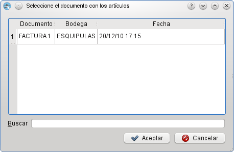

MIS Esquipulas: Inventario: Kardex de salida
MIS Esquipulas: Inventario: Kardex de salida
En esta ventana aparecen todas las facturas emitidas que necesitan un documento Kardex de salida el cual sera creado cuando la mercaderia deba salir de bodega.
 Devolución
Como puede observar en la siguiente imagen, ya se ha elegido la factura. En la tabla aparece la cantidad de unidades que saldran de bodega.
Kardex de salida